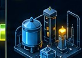
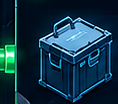
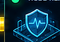
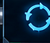

–
FORGE-VI// CONTROL ROOM
CYBER RANGE • DFIR • OT/IT • AUTOMATION • RESEARCH
–
–
–
▲–
–
–
–
localOPENSTACK
INFRASTRUCTURE
◉Total nodes–
Active–
IT nodes–
OT nodes–
IT SCENARIO
& TOPOLOGY
◉Instances–
OT / INDUSTRIAL
SCENARIO
◉
PLC–
Registers–
HMI views–
TOOL DEPLOYMENT
◉
Tools Installed–
Status–
ORCHESTRATION CORE
CONTROL BUS› Job Runner
› Level A/B/C Orchestrators
› Memory Watchdog
› Job Chain Walker
› Threads: –
› Level A/B/C Orchestrators
› Memory Watchdog
› Job Chain Walker
› Threads: –
ATTACK LAB
◉Active now–
Templates–
Recorded (all-time)–
Status–
DETECTION LAYER
◉Alerts–
Critical–
Rulesn/a
Status–
NODE HEALTH
◉
Total Nodes–
Active–
Down–
FORENSIC ACQUISITION
◉Memory (RAM) –
Disk –
Network –
Live Responsen/a
123
Sin caso activo
EVIDENCE STORE
◉Artifacts–
Size–
Cases–
All-time HISTORIC
FORENSIC ANALYSIS
Phases–
Done–
Case –
FOC RECONSTRUCTION
CPR–
Nodes–
Edges–
Status –
CAMPAIGN REPETITIONS

Total Runs–
Completed–
Running–
Failed–
COMPARISONS
Compared–
Reproducibility–
Status–
REMOTE LAB
EXCHANGE
Statusn/a
LIVE EVENT TIMELINE
cargando…